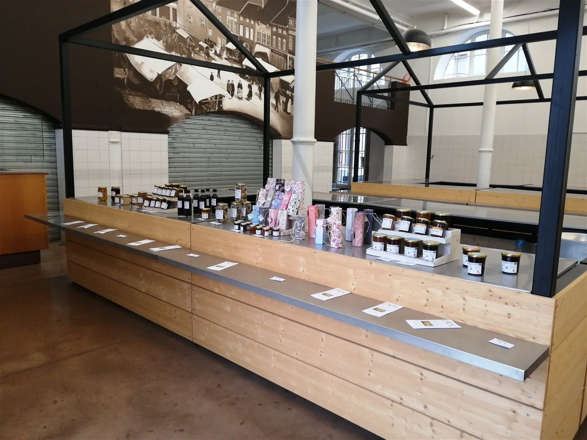

Artisan Transformateur de végétaux locaux, sans traitement.
Recettes traditionnelles et spécialités originales, faites maison.
Confitures, Gelées, sirops, fruits au sirop, compotes, champignons séchés, plantes séchés, coffrets cadeaux...
Mangez mieux, mangez local !
Notre emplacement aux Halles de Sarrebourg